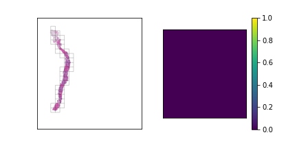

Prostate cancer grading with CV/DL (SiMR project)
September 2, 2020
Data
Each prostate biopsy is a microscopic scan of prostate gland tissue samples, typically provided in the format of a mega/giga-pixel image. Each image typically has dimensions of ~5000-40000 pixels per side, with a resolution of around 0.5 microns/pixel (~2.5-20 millimeters per side).
ISUP grade conversion
- ISUP Grade: A single integer value between 0-5 indicating the severity of cancer for the entire slide. These are the target values for the competition. A value of 0 indicates no cancerous regions, while values of 1-5 indicate increasingly severe observations.
-
Gleason score: A segmentation label mask with values between 0-5 indicating the
region type and/or cancer grade for each region.
The values are as follows:
- 0: background
- 1: stroma (connective tissue, normal)
- 2: healthy tissue (normal)
- 3: Gleason 3 (cancer)
- 4: Gleason 4 (cancer)
- 5: Gleason 5 (cancer)
Problems with the dataset
With a perfect dataset, a straightforward approach would have been to train a segmentation model on the provided masks, and apply the majority-minority rule-based prediction to return the ISUP grade. This is in accordance with existing approaches (cite), which opt to train region-level classification models before predicting the ISUP grade by majority-minority counting or by running kNN. However, only 50% of the slides provided by the competition (~5500 out of 11000) contain 6-label segmentation masks, and the masks are generated with trained CNNs instead of being hand-annotated. Inspecting the dataset easily reveals several problematic slides, with many slides being labeled with non-zero ISUP grades, while their corresponding segmentation masks contain no cancerous regions. This indicates that the overall Gleason score percentages for slides are untrustworthy, let alone the fine-grained, region-level segmentation labels.
Examples of slides with non-zero ISUP grades, but no cancerous segmentation labels
def get_isup_grade(tile):
f = np.zeros([6]) # percentage vector for each grade
for i in range(6):
f[i] = np.mean(tile == i)
gl = f[3:] # gleason 3,4,5
if np.sum(gl) == 0: # 0+0
return 0
if np.argmax(gl) == 2:
if gl[0] == 0 and gl[1] == 0: # 5+5
return 5
return 5 if gl[1] >= gl[0] else 4 # 5+4 / 5+3
elif np.argmax(gl) == 1:
if gl[0] == 0 and gl[2] == 0: # 4+4
return 4
return 5 if gl[2] >= gl[0] else 3 # 4+5 / 4+3
elif np.argmax(gl) == 0:
if gl[1] == 0 and gl[2] == 0: # 3+3
return 1
return 4 if gl[2] >= gl[1] else 2 # 3+5 / 3+3
# manual grading
n,nt = 0,0
for i,iid in enumerate(df[df['data_provider']=='radboud']['image_id']):
isup = df[df['image_id']==iid]['isup_grade'].iloc[0]
mask = openslide.OpenSlide('/kaggle/input/prostate-cancer-grade-assessment/train_label_masks/{}_mask.tiff'.format(iid))
dx,dy = mask.dimensions
mt = mask.read_region((0,0), 2, (int(dx/16), int(dy/16))) # downsample image for speed-up
mt = np.array(mt)[:,:,0] # label is in 1st channel of image
n += int(isup == get_isup_grade(mt))
nt += 1
print('Accuracy : {}/{}, {:.3f}%'.format(n, nt, float(n)/nt*100))
Accuracy: 4351/5160, 85.988%
Around 86% of the ISUP grade labels were predicted correctly using the ground truth segmentation masks.
That isn't a terrible number, but it's not great if we're hoping to train a high-quality segmentation
model
on small biopsy regions. It also tells us that even if we trained a perfect segmentation model on the
dataset,
our ISUP grade accuracy is capped at around 86%.
We can do slightly better using an ML-based approach for ISUP grade prediction - insead of applying the
majority-minority
conversion rule, we'll just feed the 6D percentage vectors into a small MLP with the ISUP grade values
as targets.
The code below does that.
# MLP grading
from sklearn.neural_network import MLPClassifier
X,Y = np.zeros([len(df), 6]),np.zeros([len(df)])
for i,iid in enumerate(df[df['data_provider']=='radboud']['image_id']):
isup = df[df['image_id']==iid]['isup_grade'].iloc[0]
mask = openslide.OpenSlide('/kaggle/input/prostate-cancer-grade-assessment/train_label_masks/{}_mask.tiff'.format(iid))
dx,dy = mask.dimensions
mt = mask.read_region((0,0), 2, (int(dx/16), int(dy/16)))
mt = np.array(mt)[:,:,0]
f = np.zeros([6])
for x in range(6):
f[x] = np.mean(mt == x)
X[i] = f
Y[i] = isup
model = MLPClassifier(hidden_layer_sizes=(100, 100), max_iter=2500)
model.fit(X, Y)
print('Training accuracy: {:.3f}%'.format(model.score(X,Y)*100))
Training accuracy: 90.148%
Take away train-test mismatch and we probably still improve over the rule-based approach,
but the noisy segmentation masks still limit our accuracy.
Furthermore, the percentage values for Gleason scores 3, 4, 5 are typically very small,
on the order of 0.01 or 0.001 for most slides, since cancerous regions typically comprise
none or only a small percentage of the biopsy. Imprecision in prediction values from a CNN
will likely be a significant error source for ISUP grade prediction, further compounding the issues
for the segmentation-based approach.
In conclusion, the errors in the model-generated segmentation labels are significant concerns
in using a segmentation-based approach. I decided to pursue a slide-level model approach,
where the ISUP grade is directly predicted, while later incorporating the segmentation approach for
identifying regions of interest in the slide.
Slide-level approach
For the main competition I decided to use a slide-level model approach, meaning models would be trained to output a single ISUP grade value per slide, and disregard region-level labels or predictions. This aligns with the majority of approaches in Kaggle, and the general approach of this section will match that of the competition. The first concern with a slide-level approach is the size of each slide - each slide is a mega/giga-pixel image. Resizing the entire into a reasonably-sized image (e.g. 512 x 512) is infeasible, since the important information is found in the magnified tissue patterns, with global structure providing no helpful information. In the weird words of an SiMR professor, "like finding a cat's nose in a paddy field".
Approach for locating tiles of interest. The regions are located in the slide,
and then combined as input into a CNN.
class SlideModel(nn.Module):
...
def forward(self, x):
# input is of size (batch_size, n_tiles, C, H, W)
n,n_tiles = x.size(0),x.size(1)
x = x.view(n*n_tiles, x.size(2), x.size(3), x.size(4)) # into single batch
x = self.net.extract_features(x) # returns the last-level feature map
# x is of size (batch_size * n_tiles, C', H', W')
nc,nd1,nd2 = x.size(1),x.size(2),x.size(3)
x = x.view(n, n_tiles, nc, nd1, nd2)
x = x.permute(0, 2, 1, 3, 4)
x = torch.reshape(x, (n, nc, n_tiles * nd1, nd2)) # concatenate tile feature maps spatially
# concat-pool
x = torch.cat([
torch.flatten(self.avgpool(x), 1),
torch.flatten(self.maxpool(x), 1)
], dim=1)
x = self.fc(x)
return x
To prevent overfitting during training, the \( N \) input tiles are sampled from a larger, pre-computed
pool of top scoring tiles from the slide (e.g. 20 sampled from 32). During validation/testing,
the top \( N \) scoring tiles are chosen. The scoring heuristic will be discussed in the next section.
Tile selection heuristics
We should have a smart selection strategy for the \( N \) tiles selected as input for the slide-level model. The majority of tiles in a slide consist entirely of background pixels, and even some tiles with tissue cell pixels may not be very informative. To this end, a scoring heuristic should be designed for evaluating the value of each tile, which can be used to compare and rank different tiles in a slide. A decent pixel-based heuristic to start off with is the mean pixel value of a tile, which devalues tiles that mostly consist of background pixels. In order to normalize this score to the \( [0,1] \) range, the mean pixel value is subtracted from 255 and divided by 255. The plots below show examples of slides with candidate tiles highlighted, along with the corresponding heuristic scores.
The set of plausible candidate tiles are highlighted in each slide, along side a plot visualizing their corresponding scores.
Tiles with high scores are prioritized in tile selection for input to the model.
One issue with a pixel-based heuristic is that it doesn't consider the semantic content of the tiles.
For example, some tiles may contain tissue cells with Gleason scores 3, 4, or 5,
while containing a significant proportion of background or lightly-colored tissue pixels.
A pixel-based heuristic risks ignoring these tiles in favor of tiles with non-cancerous tissue,
which may mislead the final ISUP grade prediction.
To overcome this, a semantic-based heuristic is used, which takes into account the segmentation mask labels.
The tiles are scored by computing the total percentage of Gleason 3, 4, and 5 pixels within the tile,
while the pixel-based score introduced earlier is used as a secondary ranking heuristic.
Although the segmentation mask labels are evidently noisy, I believe it is not a huge issue since
the tile sizes are rather large, and the computed score and ranking position of each tile does not have to be exact.
Since the segmentation mask labels are not available during inference,
a pre-trained tile-level model is used to predict the heuristic score for each tile.
Some examples using this heuristic are visualized below.


The third slide contains cancerous tissue regions, and so the tiles will be prioritized according to
the percentage of cancerous pixels. Since the first two slides do not contain any, the tiles will be
sorted according to a pixel-based heuristic.
We can compare these 2 heuristics by training some models for ISUP grade prediction, using each for tile selection.
The backbone model used for feature extraction is ResNet-50, and the number of tiles \( N \) selected for model input
is chosen as \( 20 \) (the RTX 2060 GPU available for this project only contained so much memory).
The \( 20 \) tiles are sampled from a larger pool of \( 32 \) tiles.
Evaluating on a held-out validation set, we get the results below:
ResNet-50 | 20 tiles | pixel-based scoring: 69.98% accuracy, 84.76 QWK
ResNet-50 | 20 tiles | model-based scoring: 71.13% accuracy, 86.34 QWK
ResNet-50 | 20 tiles | model-based scoring: 71.13% accuracy, 86.34 QWK
Fast tile selection
One issue that arises with tile selection is that there can be up to several hundreds, or even thousands of tiles in a mega/giga-pixel slide, depending on the desired tile size and slide dimensions. Iterating through and computing a score for every single one of these tiles with a simple pixel-count heuristic, let alone a CNN-based heuristic, is time-intensive, and rather inefficient given that much of a slide is comprised of background pixels. To deal with this I wrote a method to increase the speed of tile selection, by evaluating regions of the slide in a hierarchical manner. At each level, this method splits a region of interest into \( K \) x \( K \) smaller regions. If a region meets the desired criteria (i.e. not entirely whitespace), the method proceeds recursively on that region until the level matches the desired tile size. Otherwise, that region is discarded. The code for this method is shown in the block below:
'''
Returns tiles of interest from slide [slide], of size [end_tile_size] via hierarchical tiling
At each level, splits image into roughly [split] X [split] regions, and continues on regions that fulfill criteria
'''
def find_roi(slide, end_tile_size=299, split=3):
# downsampled image is used for evaluating regions
dx,dy = slide.dimensions
mag_factor_x,mag_factor_y = 16,16
img = np.array(slide.read_region((0,0), 2, (int(dx/16), int(dy/16))).convert('RGB'))
ratio = min(dx,dy)/end_tile_size
n_levels = int(math.ceil(np.log(ratio)/np.log(split))) # computes no. of levels until desired tile size is reached
if n_levels == 1:
coords = basic_tile_roi(slide, end_tile_size) # very few tiles, applies brute force tiling
return coords
# recursive helper function
def helper(img, x0, x1, y0, y1, level):
coords = []
tile_size = end_tile_size*split**level
nx = int(math.ceil((x1-x0)/tile_size))
ny = int(math.ceil((y1-y0)/tile_size))
for i in range(ny):
for j in range(nx):
mx0 = x0+j*tile_size
mx1 = x0+(j+1)*tile_size
my0 = y0+i*tile_size
my1 = y0+(i+1)*tile_size
tile = img[int(my0/mag_factor_y):int(my1/mag_factor_y), int(mx0/mag_factor_x):int(mx1/mag_factor_x)]
coord = (mx0, mx1, my0, my1)
if np.mean(tile) < 254.5: # filtering criteria for background pixels
if level == 0:
coords.append(coord) # desired tile size is reached, add to list of tiles
else:
coords.extend(helper(img, mx0, mx1, my0, my1, level-1)) # continue on lower level
return coords
return helper(img, 0, dx, 0, dy, n_levels-1)
We can test the runtime of this method, versus the runtime of brute-force tiling, with the code below.
Both methods are tested on 100 slides, where all candidate tiles are scored with a basic pixel-based heuristic.
The function basic_tile_roi is a simple iterative function that returns all possible candidate tile coordinates.
def basic_tile_roi(slide, tile_size):
tiles = []
dx,dy = slide.dimensions
for i in range(int(math.ceil(dy/float(tile_size)))):
for j in range(int(math.ceil(dx/float(tile_size)))):
i1,i2 = i*tile_size,min(dy,(i+1)*tile_size)
j1,j2 = j*tile_size,min(dx,(j+1)*tile_size)
tiles.append([j1, j2, i1, i2])
return tiles
# testing function
n = 100
def test_tiling_time(tile_fn, n=100):
for iid in df['image_id'].iloc[:n]:
slide = openslide.OpenSlide('/kaggle/input/prostate-cancer-grade-assessment/train_images/{}.tiff'.format(iid))
tiles = tile_fn(slide)
for x0,x1,y0,y1 in tiles:
tile = slide.read_region((x0, y0), 1, (299, 299)).convert('RGB')
score = np.mean(tile)
# Hierarchical tiling
start_time = time.time()
test_tiling_time(lambda x: find_roi(x, end_tile_size=1196, split=2), n)
print('Time for hierarchical tiling: {:.2f}s'.format(time.time() - start_time))
# Brute-force tiling
start_time = time.time()
test_tiling_time(lambda x: basic_tile_roi(x, 1196), n)
print('Time for brute force tiling: {:.2f}s'.format(time.time() - start_time))
Time for hierarchical tiling: 41.42s
Time for brute force tiling: 149.17s
This speeds up our tile selection process by about 3.5x, and this factor would grow if a CNN-based
scoring heuristic (or some similarly time-intensive heuristic) is used, since the scoring heuristic is being evaluated
on a much smaller set of tiles.
The hierarchical tile search process is visualized below in a few examples, for a fairly large tile size (1196 x 1196px):
Time for brute force tiling: 149.17s